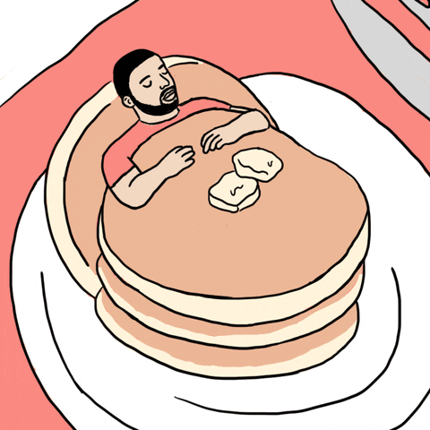

Pancake Recipe
Pancake Recipe

Description
These pancakes will be bussin all over your face and mouth and maybe even down your throart.
Ingredients
- 2 eggs
- 1 1/3 cup milk
- 1 tbsp vanilla essence
- 2 cups self raising flour
- 1/3 cup sugar
- Butter
- Maple syrup
Preperation
- Whisk eggs, milk and vanilla together in a jug. Sift flour into a large bowl. Stir in sugar. Make a well in the centre. Add milk mixture. Whisk until just combined.
- Heat a large non-stick frying pan over medium heat. Grease pan with butter or spray with cooking oil. Using 1/4 cup mixture per pancake, cook 2 pancakes for 2 minutes or until bubbles appear on surface. Turn and cook for a further 1-2 minutes or until cooked through. Transfer to a plate. Cover loosely with foil to keep warm. Repeat with remaining mixture, greasing pan with butter or cooking oil between batches.
- Serve with maple syrup and extra butter.